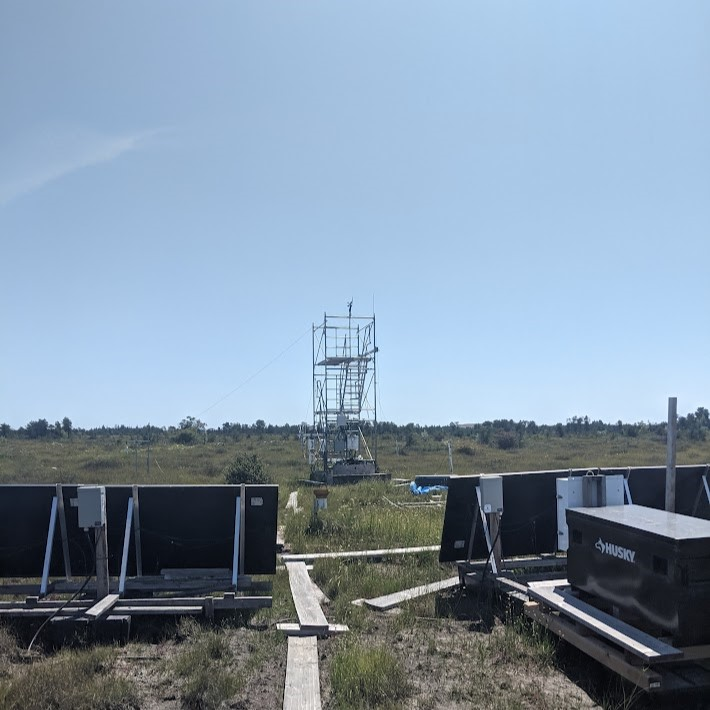

The atmosphere is a selective absorber (and emitter) of long-wave radiation.
Aerosols and clouds are dominant when present
Most significant absorbing gases:
H2O
CO2
O3
O2
N2O
CH4
Atmospheric absorption and emission
Kirchhoff’s Law tells us that since atmospheric absorption is concentrated at these wavelengths so is atmospheric emission.
Equally, at wavelengths where the atmosphere is poor at absorbing it is poor at emitting.
Atmospheric absorption and emission
Net Long-wave Flux Density
The net long-wave radiation flux density (\(LW^*\)) at the surface is the difference between the input from the atmosphere above (\(LW\downarrow\)) and the output surface (\(LW\uparrow\)).
\[
LW^* = LW\downarrow - LW\uparrow
\qquad(4)\]
Surface output includes both emissions from surface and reflected \(LW\downarrow\)
Differs from \(SW*= SW\downarrow - SW\uparrow\)
\(SW\uparrow\) is only reflected \(SW\), earth doesn’t emit \(SW\)!
Net Long-wave Flux Density
We can re-formulate the previous equation in terms of the Stefan-Boltzmann Law:
Is long-wave radiation emitted by the surface generally greater than that emitted by the atmosphere?
Hint: is the surface usually warmer than the atmosphere?
A - Yes
B - No
Clear Skies
Figure 1: Incoming and Outgoing Long-wave Radiation at Burns Bog July 21st, 2023.

\(LW\downarrow\) = 340 w m-2
\(LW\uparrow\) = 416 w m-2
\(LW^* = LW\downarrow - LW\uparrow\) = -76 w m-2
Cloudy Skies (iClicker)
Figure 2: Incoming and Outgoing Long-wave Radiation at Burns Bog December 27th, 2022.
\(LW\downarrow\) = 348 w m-2
\(LW\uparrow\) = 349 w m-2
\(LW^*\) = ?
Which day was warmer? (iClicker)
Figure 3: A
Figure 4: B
The Greenhouse Gas Effect
The Greenhouse Gas Effect
Not a great analogy:
Warming mostly due to reduction of convective heat transfer
Much less due to \(LW\downarrow\) from the glass
In the Atmosphere convection is not constrained
The Greenhouse Gas Effect
Perhaps it would be better called the sweater effect?
A sweater works by trapping and recycling \(LW\) emitted from your body
Yarrow wears a sweater to reduce her \(LW\) flux density and stay warm
The Greenhouse Gas Effect
The atmosphere is a selective absorber (and emitter) of long-wave radiation.
Aerosols and clouds are dominant when present
Most significant absorbing gases:
H2O
CO2
O3
O2
N2O
CH4
View factors
The view of the sky from an object (sky view factor; \(\psi_{sky}\)) is significant in quantifying Long-wave exchange at night. + The sky is usually ‘cold’ and an effective heat sink
Implications of \(\psi_{sky}\)
A stand of trees can keep livestock warm at night by reducing the animals’ \(\psi_{sky}\)
A tent reduces the \(\psi_{sky}\) to zero for the occupants!
These enclosures provide a source of longwave radiation to the young grape plants at night
Measuring \(LW\)
This is a pyrgeometer
Measuring \(LW\downarrow\) and \(LW\uparrow\)
Take home points
Long-wave radiation is emitted from Atmosphere (gases, aerosols, droplets) and surface at ambient temperatures.
Kirchhoff’s Law states that for a certain wavelength the absorptivity \(a_{\lambda\)} equals emissivity \(\epsilon_{\lambda}\).
Absorptivities and emissivities of most natural surface materials are high in the Long-wave, but not for gases.
The ‘atmospheric window’ is a region in the Long-wave where few gases interfere - often transparent.